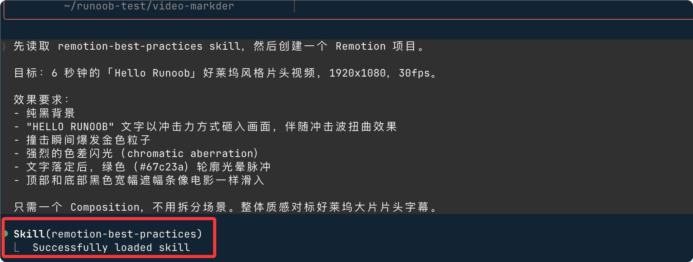
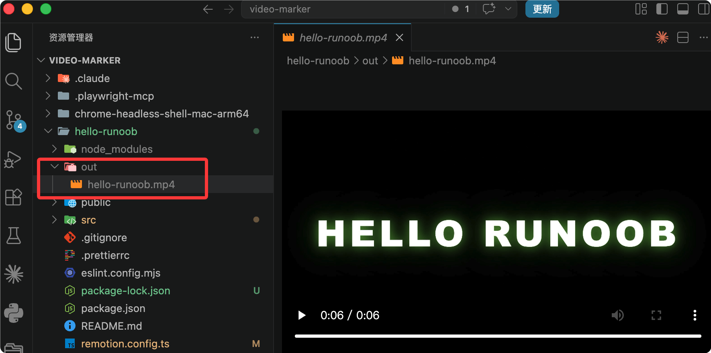
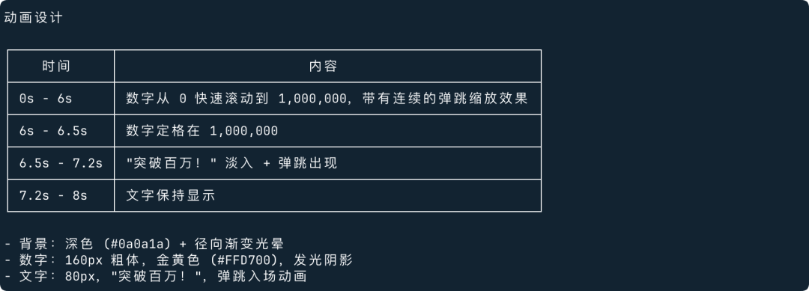

Claude Code 与 remotion-best-practices 制作视频
本章节介绍如何在本地通过 Claude Code 配合 remotion-best-practices skill，从零开始搭建并生成一个 Remotion 宣传视频项目。
前置准备
在开始之前，确保你的本地环境满足以下要求。
| 依赖项 | 版本要求 | 用途 |
|---|---|---|
| Node.js | >= 18.0 | 运行 Remotion 与 npm 脚本 |
| npm / pnpm | 最新稳定版 | 依赖包管理 |
| Claude Code | 最新版 | AI 辅助代码生成与项目搭建 |
| remotion-best-practices | 已安装为 skill | 提供 Remotion 项目规范与模板 |
安装 Claude Code
官方提供了一键安装脚本，根据你的系统选择对应的命令执行。
macOS、Linux、WSL：
curl -fsSL https://claude.ai/install.sh | bash
Windows PowerShell：
irm https://claude.ai/install.ps1 | iex
Windows CMD：
curl -fsSL https://claude.ai/install.cmd -o install.cmd && install.cmd && del install.cmd
安装完成后，验证是否成功：
$ claude --version 2.1.142 (Claude Code)
首次运行需要登录 Anthropic 账号并授权，如果没有官方账号，可以查看 Claude Code API 配置
安装 remotion-best-practices Skill
Skill 是 Claude Code 的扩展能力包，remotion-best-practices 封装了 Remotion 项目的最佳实践与代码模板。
什么是 Skill
Skill 本质上是一个结构化的提示词文档（SKILL.md），Claude Code 读取后会获得对应领域的专业知识与规范约束。
remotion-best-practices skill 包含以下内容：
| 内容模块 | 说明 |
|---|---|
| 项目目录规范 | 定义 compositions、components、assets 的标准分层结构 |
| 动画 API 用法 | interpolate、spring、useCurrentFrame 的标准写法 |
| 性能最佳实践 | 避免重复渲染、静态资源预加载等规范 |
| 渲染配置模板 | codec、fps、分辨率等推荐参数组合 |
安装方式
在终端进入你的项目目录，执行安装命令：
npx skills add https://github.com/remotion-dev/skills --skill remotion-best-practices
安装成功后，可以验证 skill 已被识别：
claude skills list
可以看类似以下的栏目：
Installed skills: - remotion-best-practices (active)
remotion-best-practices 源码地址：https://github.com/remotion-dev/skills
创建 Remotion 项目
所有准备工作完成后，在空目录中启动 Claude Code，用一段 Prompt 让它自动搭建项目。
启动 Claude Code 并传入 Prompt
我们可以创建目录 video-marker，然后进入：
mkdir video-marker cd video-marker
在项目目录中运行：
claude
进入交互界面后，粘贴以下 Prompt：
先读取 remotion-best-practices skill，然后创建一个 Remotion 项目。 目标：6 秒钟的「Hello Runoob」好莱坞风格片头视频，1920x1080，30fps。 效果要求： - 纯黑背景 - "HELLO RUNOOB" 文字以冲击力方式砸入画面，伴随冲击波扭曲效果 - 撞击瞬间爆发金色粒子 - 强烈的色差闪光（chromatic aberration） - 文字落定后，绿色（#67c23a）轮廓光晕脉冲 - 顶部和底部黑色宽幅遮幅条像电影一样滑入 只需一个 Composition，不用拆分场景。整体质感对标好莱坞大片片头字幕。

接下来等待生成就好了～
完成后，会告诉你怎么生成 mp4 文件：

浏览器预览：
cd hello-runoob npm run dev
预览效果：

生成 mp4：
cd hello-runoob npx remotion render HelloRunoob out/hello-runoob.mp4
导出信息：

视频在 out 目录下：

Prompt 中明确要求 Claude Code 先读取 skill，这样生成的代码会严格遵循 remotion-best-practices 的规范，而不是依赖模型本身的默认习惯。
Claude Code 会做什么
Claude Code 读取 skill 后，会自动完成以下步骤：
| 步骤 | 操作 | 生成内容 |
|---|---|---|
| 1 | 初始化项目 | package.json、tsconfig.json、remotion.config.ts |
| 2 | 创建目录结构 | src/compositions、src/components、src/assets |
| 3 | 生成 Scene 组件 | Intro.tsx、FeaturesScene.tsx、StatsScene.tsx、Outro.tsx |
| 4 | 生成通用组件 | TechCard.tsx、AnimatedCounter.tsx、CodeSnippet.tsx |
| 5 | 注册 Composition | Root.tsx 中完成所有场景拼接 |
更多实例
示例一：数字增长动画
帮我用 Remotion 创建一个 8 秒的视频。背景是深色，画面中央显示一个数字，从 0 逐渐增长到 1,000,000，数字有弹跳动画效果，最后定格时出现"突破百万！"的字样。字体要大，颜色用金黄色。 Claude Code 接到这个指令后会：

我们可以在 Claud 中直接让 AI 帮我们导出视频：

生成的视频：

示例二：产品发布倒计时
用 Remotion 做一个 15 秒的产品发布倒计时视频。从 10 倒数到 0，每个数字出现时有缩放+透明度的过渡动画，背景用黑色，数字用白色大字体，右上角有"NEW"红色徽章。倒计时结束时全屏出现产品名称"CLAUDE PRO"，字体要震撼。
生成的视频：

关键点：Prompt 越具体越好。描述清楚时间、颜色、效果、文字内容，Claude Code 就能一次做到位，不需要你反复调整。
理解生成的项目结构
项目搭建完成后，目录结构如下：
hello-runoob/
├── package.json
├── tsconfig.json
├── remotion.config.ts
└── src/
├── index.ts ← 入口，注册所有 Composition
├── Root.tsx ← 主 Composition，拼接所有场景
├── compositions/
│ ├── Intro.tsx ← 开场 Logo 动画
│ ├── ProblemScene.tsx ← 问题引入场景
│ ├── FeaturesScene.tsx ← 技术卡片展示
│ ├── StatsScene.tsx ← 数据统计场景
│ └── Outro.tsx ← 结尾 CTA
├── components/
│ ├── TechCard.tsx ← 单个技术卡片
│ ├── AnimatedCounter.tsx ← 数字滚动
│ └── CodeSnippet.tsx ← 代码块动画
└── assets/
├── colors.ts ← 品牌色常量
└── logo.svg

核心文件解读
Root.tsx 是整个视频的入口，所有场景按时间轴顺序在这里拼接：
Root.tsx 结构示意
import { Composition } from "remotion";
import { HelloRunoob } from "./Composition";
export const RemotionRoot: React.FC = () => {
return (
<>
<Composition
id="HelloRunoob"
component={HelloRunoob}
durationInFrames={180}
fps={30}
width={1920}
height={1080}
/>
</>
);
};
主视频组件，用 Series 按顺序拼接场景:
const MainVideo = () => {
return (
<Series>
<Series.Sequence durationInFrames={90}> {/* 3秒 */}
<Intro />
</Series.Sequence>
<Series.Sequence durationInFrames={210}> {/* 7秒 */}
<FeaturesScene />
</Series.Sequence>
<Series.Sequence durationInFrames={450}> {/* 15秒 */}
<StatsScene />
</Series.Sequence>
<Series.Sequence durationInFrames={300}> {/* 10秒 */}
<Outro />
</Series.Sequence>
</Series>
);
};
安装依赖并预览
Claude Code 生成代码后，按照它的提示安装依赖：
npm install
启动 Remotion Studio 预览视频效果：
npx remotion studio
> runoob-promo@1.0.0 studio > remotion studio Remotion Studio running at http://localhost:3000
浏览器会自动打开 http://localhost:3000，可以拖动时间轴实时预览每一帧的效果。
预览时如果某个场景动画看起来太快或太慢，直接告诉 Claude Code："第 2 个场景的卡片入场动画太快，延迟改长一些"，它会定位到对应代码并修改。
用 Claude Code 迭代调整
Remotion Studio 预览时，发现问题可以直接在 Claude Code 中用自然语言描述，无需手动改代码。
常见调整场景
| 问题描述 | 告诉 Claude Code 的方式 |
|---|---|
| 卡片动画太快 | FeaturesScene 里卡片的 spring stiffness 降低到 80 |
| 背景色不对 | 所有场景背景色改为 #0d1117 |
| 数字计数器不流畅 | StatsScene 的 AnimatedCounter 用 easeOutCubic 缓动 |
| 想增加一个场景 | 在 StatsScene 后面加一个展示在线实例功能的场景，10秒 |
| 文字字体太小 | Intro.tsx 的主标题字体改为 96px |
直接在 Claude Code 终端描述问题，它会找到对应文件并修改，修改完毕后 Remotion Studio 会自动热更新。
渲染输出最终视频
效果满意后，渲染成 MP4 文件：
渲染命令
src/index.ts \ # 入口文件
RunoobPromo \ # Composition ID，与 Root.tsx 中一致
out/runoob-promo.mp4 \ # 输出路径
--codec=h264 \ # 编码格式，兼容性最好
--width=1920 \ # 输出宽度
--height=1080 # 输出高度
Rendering RunoobPromo (1800 frames) Progress: ████████████████████ 100% Rendered in 2m 34s → out/runoob-promo.mp4
Remotion 最佳实践：让 AI 帮你做得更好
渲染速度取决于场景复杂度与机器性能。如果视频较长且特效较多，可以加上 --concurrency=4 参数开启多线程并行渲染，速度可提升 3~4 倍。
在实际使用中，有一些技巧可以让你的视频质量大幅提升。把这些说明加进你的 Prompt 里，效果会明显不同：
🎬 帧率与尺寸
- 告诉 Claude Code 你要投哪个平台：抖音用 1080×1920 竖屏，B站用 1920×1080 横屏，微信用 1:1 方形。
- 帧率（fps）推荐用 30fps（流畅）或 60fps（超流畅，文件更大）。
🎞 动画节奏
- 用 Remotion 的
spring()函数做弹性动画，比线性动画自然 10 倍。在 Prompt 里说"使用弹性缓动效果"。 - 文字逐字出现时，告诉 Claude 用"stagger 延迟"，每个字间隔几帧依次出现。
- 视频开头和结尾加 0.5 秒淡入淡出，观感更专业。
🎨 视觉质感
- 背景不要用纯色，让 Claude 用渐变或网格纹理，瞬间提升质感。
- 加字幕时，给文字加
text-shadow，暗色背景上白字更清晰。 - 数据图表用
@remotion/motion-blur插件，运动时有模糊感，更像电影镜头。
⚡ 渲染效率
- 开发阶段用
npx remotion preview预览，觉得满意再渲染导出，节省时间。 - 如果视频很长，让 Claude 开启
--concurrency参数并行渲染，速度快几倍。 - 图片和字体资源用
staticFile()引用，避免路径报错。
常见问题
Claude Code 没有读取 skill
如果生成的代码不符合 remotion-best-practices 的规范，说明 skill 没有被正确读取。
在 Prompt 开头明确加上这句话：
强制读取 skill
Remotion Studio 启动报错
常见原因是 Node.js 版本过低。检查并升级：
升级 Node.js
nvm install 20
nvm use 20
spring() 动画只显示第一帧
这是因为 frame - delay 的值为负数时 spring 返回 0。
加上 clamp 保护：
修复负帧问题
frame: Math.max(0, frame - delay), // 确保传入值不为负数
fps,
config: { damping: 12, stiffness: 180 },
});

点我分享笔记